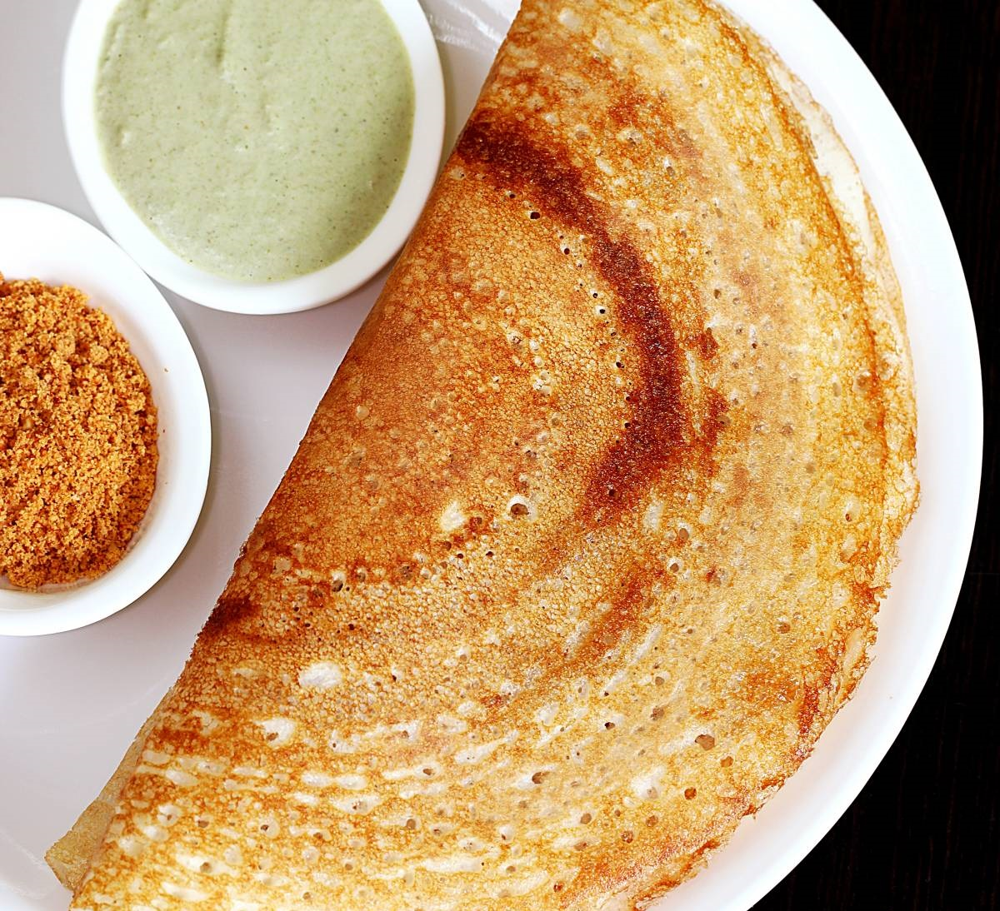

Ingredients:
For the Dosa Batter:
- 2 cups rice
- 1/2 cup urad dal (split black lentils)
- 1/4 teaspoon fenugreek seeds
- Salt to taste
- Water as needed
- Oil or ghee for cooking
Instructions:
- Soak rice, urad dal, and fenugreek seeds in water for 6-8 hours or overnight.
- Grind the soaked ingredients into a smooth batter, adding water as necessary.
- Let the batter ferment in a warm place for 8-10 hours.
- Add salt to the fermented batter and mix well.
- Heat a non-stick pan or tawa over medium heat. Grease it lightly with oil or ghee.
- Pour a ladleful of batter onto the pan and spread it out in a circular motion to form a thin layer.
- Cook until the dosa turns golden brown and crispy. Fold and serve hot with chutney and sambar.
Tips:
- Ensure the batter is well fermented for a crispy dosa.
- You can add a little water to adjust the consistency of the batter if it's too thick.